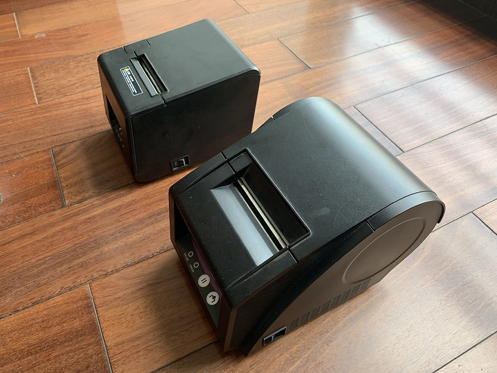
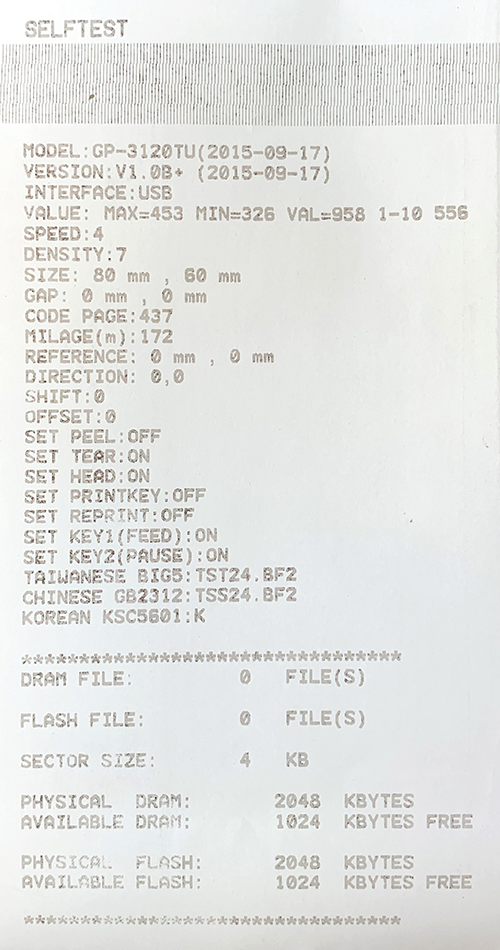
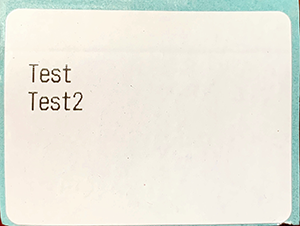

在 Linux 下使用佳博（GPrinter）热敏标签打印机
Contents
背景
我在高中时期曾购入一台佳博 GP-L80160I 热敏票据打印机，用来在学校从事一些轻便的打印活动，以免去抄写之苦。
最近想打印标签玩，可是卖标签纸的店家告诉我这款打印机不能打印不干胶标签。于是我斥资 ¥100.00 在闲鱼上购买了一台二手 GP-3120TU。该款打印机号称既能够打印小票纸，又能够打印不干胶，还配备了内置电源。就是圆乎乎的它比 GP-L80160I 大了好多。

自检
由于标签纸还没送到，我掏出了箱子里五年陈的热敏小票纸进行测试。
根据网上找来的这份说明书，GP-3120TU 触发自检的方式是按住 FEED 键开机，于是我得到了一条长长的空白纸带。仔细研读说明书后，发现是纸卷装反了。修正后得到如下结果：

可以看到该机里程表示数为 172 米，基本符合卖家声称的“使用了半年”。顺便注意到该机型不含切刀，需要手动撕纸。
打印
热敏打印机一般配合 Windows 使用，所以驱动基本上也仅限 Windows。可是我是用来玩耍的，也没有常年开一台 Windows 机器的条件，怎么办呢？
好在热敏打印机一般支持一些较为简单的命令式协议，使得我们可以直接从 USB 发送指令与其通信。比如我之前就造过一个用热敏打印机打印 Markdown 文档的轮子。这个小工具基于 pyusb 和 ESC/POS 协议实现了在 Linux 命令行下控制热敏打印机打印有限的 Markdown 文档，且在 GP-L80160I 下工作良好。
可是到了 GP-3120TU 这儿，程序没有输出任何错误，打印机也没有发出任何动静。可见机器可能不支持 ESC/POS 或需要特殊设置又或是存在故障。由于懒得装 Windows 来测试，我开始上网搜索。
可能是没什么人像我一样玩耍热敏打印机，搜了半天死活找不到相关文档。唯一能搜到的相关结果是这则用户留言。其中似乎是管理员回复道：“您好，您所需要的资料已发送至您的邮箱，请注意查收，感谢您对我们的支持！”在这个似乎是官网的地方转悠了一圈也没找到相关型号的文档，直到我点击了“技术咨询”按钮，聪明的机器人客服一眼看穿了我的想法，给了我一根微云链接，里面有一些文档。
粗略阅读后容易发现，佳博的热敏打印机们存在三套协议：用于标签打印的 TSC、用于票据打印的 ESC 和用于面单打印的 CPCL。文档中指出，对于“多种模式的打印机”，可以发送某命令切换协议。于是我使用文档中的指令切换到 ESC 模式，再次尝试发动轮子，还是失败了。这么看来，我们的 GP-3120TU 虽然能打印票据，但用的还是标签的协议吧。
于是尝试 TSC 协议，发送 SELFTEST\r\n，一下就出来了一张自检页。那么，接下来我们只需要用这个很方便的肉眼可读的 TSC 协议向打印机喊话即可。
思考
虽然打印成功了，可是为什么淘宝卖家说 GP-L80160I 不能打标签呢？从热敏打印的原理看，只要能够精准地加热热敏纸的某些地方，应该就能够成功打印才对。既然现在标签纸已经送到了，不妨装进去试一试。效果如下：

可见，用小票打印机在不干胶标签上印出字是完全可行的，但是可能存在几个问题：
- 不支持精确的位置控制，以至于难以做到“在标签纸距离距左边 1 mm 距上边 1 mm 的地方开始放一个二维码”。
- 不能方便地在标签上绘制图形。
- 如果没有黑标，难以控制纸卷准确地送出一张标签纸。
- GP-L80180I 的热敏纸是直接扔在纸仓里的，而 GP-3120TU 的标签安装在一个卷轴上。由于没有卷轴，不够宽的标签纸可能会在里面乱晃，较大的摩擦力也可能影响出纸精度。
- 标签设计软件不支持输出为 ESC 命令。
- 不支持“打印 n 张”的指令，在需要打印一样的多张标签时需要反复发送全部内容，可能爆缓冲区。
因此，对于一般的商家这可能不是一个合适的选择。不过如果这些问题对您都不是问题，那您完全可以使用票据打印机打标签。
Author SEIAROTg
LastMod 2019-08-11